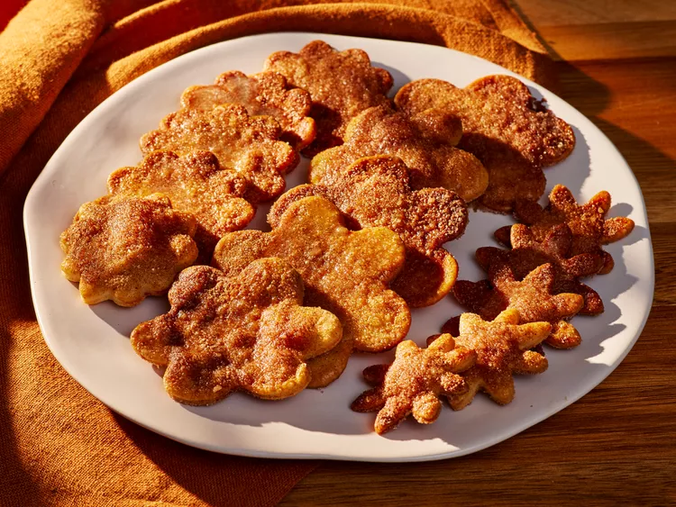

Pie Crust Cookies

Description
These easy pie crust cookies are flaky and buttery, with a delicious cinnamon sugar crust. The cinnamon sugar will make your kitchen smell like fall! Use any shape cookie cutter you like.
Ingredients
- 1 premade pie crust
- all purpose flour for dusting
- 1 large egg
Steps
- Gather all ingredients. Preheat the oven to 375 degrees F (190 degrees C). Line 2 large rimmed baking sheets with parchment paper; set aside.
- Roll premade pie crust to 1/8-inch thickness on a lightly floured work surface, and cut using desired cookie cutter shapes.
- Transfer cut-outs to prepared baking sheets, leaving about a 1/2-inch space between each cookie. Repeat with remaining dough, rerolling scraps once.